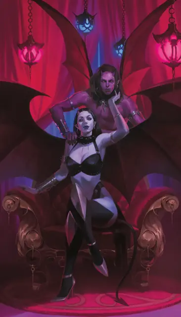

Суккуб
Succubus
Среднее Исчадие, Нейтральное Злое

Класс Защиты 15 Инициатива +3 (13)
Хиты 71 (13к8 + 13)
Скорость 30 футов, Полёта 60 футов
| мод | спас | ||
|---|---|---|---|
| СИЛ | 8 | −1 | −1 |
| ЛОВ | 17 | +3 | +3 |
| ТЕЛ | 13 | +1 | +1 |
| мод | спас | ||
|---|---|---|---|
| ИНТ | 15 | +2 | +2 |
| МДР | 12 | +1 | +1 |
| ХАР | 20 | +5 | +5 |
Сопротивление урону Огонь, Психический, Холод, Яд
Чувства Тёмное зрение 60 футов, пассивное Восприятие 15
Языки Общий, Бездны, Инфернальный, Телепатия 60 фт.
Опасность 4 (1 100 опыта; БВ +2)
Особенности
Облик инкуба. Когда суккуб завершает Долгий отдых, он может перевоплотиться в Инкуба, используя соответствующий блок статистики вместо своего. Снаряжение, которое он носит или несёт, не превращается.
Действия
Мультиатака. Суккуб совершает одну атаку Прикосновением исчадия и использует Очарование или Истощающий поцелуй.
Прикосновение исчадия. Бросок рукопашной атаки: +7, досягаемость 5 фт. Попадание: 16 (2к10 + 5) Психического урона.
Очарование. Суккуб сотворяет заклинание Подчинение личности (версия 8-го уровня), не требуя компонентов (заклинательная характеристика — Харизма; Сл спасброска заклинаний 15).
Истощающий поцелуй. Спасбросок Телосложения: Сл 15, одно Очарованное суккубом существо в 5 футах. Провал: 13 (3к8) Психического урона. Успех: Только половина урона. Провал или успех: Максимум Хитов цели снижается на число, равное полученному урону.
Бонусные действия
Перевоплощение. Суккуб перевоплощается в Гуманоида Маленького или Среднего размера или возвращается в свой истинный облик. Блок статистики суккуба неизменен в любом облике, за исключением Скорости полёта: она доступна только в истинном облике суккуба. Любое снаряжение, которое он носит или несёт, не трансформируется.
Бонус мастерства +2
Среда обитания Город, Нижние планы
Сокровища Инструментальные
Суккуб
Пьющий жизнь искуситель
Суккубы физически охотятся на смертных и умело играют на их явных желаниях. Они наслаждаются тем, что развращают добродетельные души, и болью, которую приносит падение их жертв. Когда те оказываются на самом дне, суккубы убивают их поцелуем, вытягивающим жизненную силу.
С помощью адских ритуалов суккубы могут превращаться в инкубов, чтобы манипулировать добычей и во сне, и наяву. Также они умеют менять облик, мучая жертв. Эти искусители способны подчинять Гуманоидов, но обычно делают это лишь для усиления своих манипуляций или для самозащиты, а не для прямого контроля.
Совершите бросок по таблице «Искушения суккуба» для вдохновения или определите сами, как именно суккуб играет со своими жертвами.
Искушения суккуба
| к6 | Суккуб манипулирует целью… |
| 1 | Принимая облик умершего любимого человека. |
| 2 | Очаровывая кого-то из близких к цели. |
| 3 | Изолируя цель от её близких. |
| 4 | Подстраивая события так, будто это удача. |
| 5 | Притворяясь льстивым подчинённым. |
| 6 | Принимая облик того, кто нуждается в защите. |